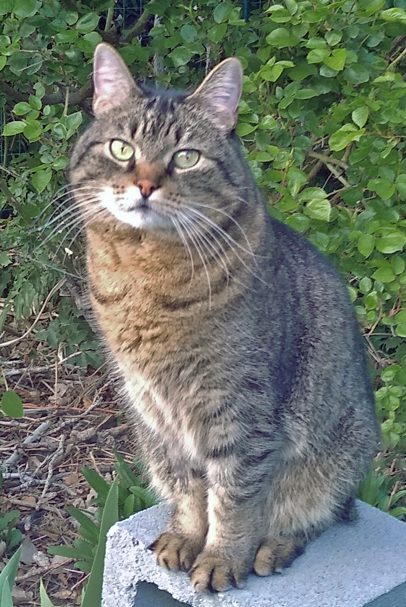

Personal Info
- Major: Computer Science
- High School: N/A, earned GED in 2017
- Current year at UVU: Freshman
- Favorite Ice Cream Flavor: Goat's Milk
My Five Favorite Books
- Brave New World, Aldous Huxley
- Ender's Shadow, Orson Scott Card
- Harry Potter, J.K. Rowling
- The Rithmatist, Brandon Sanderson
- Frankenstein, Mary Shelley
Resilience: A Haiku
The yielding tree bends
It sways in the wind and rain
When rigid walls fall
This is the reminder I must constantly give myself: that freedom and survival are not the outcome of stubbornness, but of flexibility and openness.
My Cat, Ender ↓
...because I have to take every opportunity to show off pictures of my cat.
Fun Fact: I have a Commercial Driver's License
My Personal Interests
I thoroughly enjoy video games of many varieties, and very likely spend more time gaming than is healthy. My favorite games generally fall into the genres of RPG (Role-Playing Game), MOBA (Multiplayer Online Battle Arena), and Strategy/Puzzle. My favorite RPG is either Skyrim or Cyperpunk 2077, my favorite MOBA is League of Legends, and my favorite puzzle game is Portal 2. I've been playing a lot of Valorant lately as well, which, as an FPS (First-Person Shooter) is a bit unusual for me... but it's been a lot of fun. I also play board games with my friends, and card games such as Magic: The Gathering or Flesh & Blood.
Another interest of mine is art. I love to doodle and have many sketchbooks full of my art. I have a drawing tablet that I'm using to try to learn digital illustration, as well. Most of my drawings are of my favorite League of Legends character, Evelynn.
Lastly, I love music. I am not very skilled at any instruments since I no longer practice regularly, but there was a time when I played piano, viola, cello, guitar, and electric bass. My favorite band is Carbon Leaf, a folk rock group from the East coast.
| Monday | Tuesday | Wednesday | Thursday | Friday | |
|---|---|---|---|---|---|
| 16:00 | CS-2550 | CS-1410 | CS-2550 | CS-1410 | CS-2550 |
| 17:00 | |||||
| 18:00 | |||||
| 19:00 | -break- | -break- | -break- | -break- | -break- |
| 20:00 | CS-1410 | CS-2550 | CS-1410 | CS-2550 | CS-1410 |
| 21:00 | |||||
| 22:00 | Snack Time! | Snack Time! | Snack Time! | Snack Time! | Snack Time! |
| 23:00 | Play Valorant | Play Valorant | Play Valorant | Play Valorant | Play Valorant |
| 00:00 | |||||
| 1:00 | |||||
| 2:00 | |||||
| 3:00 | |||||
| 4:00 | |||||
| 5:00 | Regret playing too much Valorant | Regret playing too much Valorant | Regret playing too much Valorant | Regret playing too much Valorant | Regret playing too much Valorant |
| 6:00 | Crash from exhaustion | Crash from exhaustion | Crash from exhaustion | Crash from exhaustion | Crash from exhaustion |